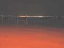
Les "Gonflés à Bloc" à Saint-Brévin, à l'embouchure de la Loire... Prévision météo pas terrible, mais finalement, il fera à peu près beau tout le week-end, pas une goutte de pluie sur les cervolistes et du vent, fort le samedi, moins fort mais suffisant le dimanche. J'arrive vendredi soir, on voit toute la baie s'illuminer...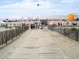
L'accès devient encore plus difficile, une piste cyclable interdit le stationnement sur le boulevard, faut arriver tôt ! Heureusement, une splendide descente en bois facilite les acheminements... mais bouffe 800 m2 de dunes, faut choisir !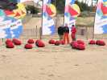
Samedi matin, les bergers sont déjà là et gardent leur troupeau !...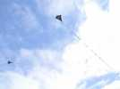
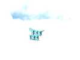
Un magnifique Saconney (je rappelle : Cody=Continu, Saconney=Séparé, selon une formule de Sylvien) très entretoisé contre la déformation et d'un beau bleu azur...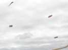
Intéressants aussi, ces cerfs-volants constitués de rondelles de spi tendues par des joncs circulaires et portés à 45° par une armature longitudinale.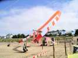
Les Espagnols sont là, avec leur tente bandée par le vent (traction sur les haubans=100kg !) et une magnifique "banderole" assez stable.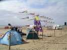
Loïk est là, sans Jacqueline aujourd'hui, elle viendra demain. Il a monté une armada de bannières à turbine, pièges à CVs mais qu'il monte toujours du côté au vent des terrains...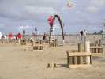
Pendant ce temps, les artificiers commencent à monter le feu d'artifice qui s'annonce monumental !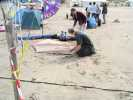
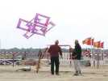
De loin, cette machine est un peu difficile à comprendre !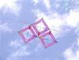
De plus près, on voit qu'elle est composée d'un plan de 3 carrés, avec 3 autres carrés perpendiculaires... Evidemment, rien n'est symétrique, mais ça vole bien !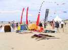
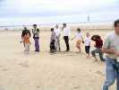
On part fort avec le combat de Rokkakus... enfants ! Tout est fourni, les Rokkakus, les lignes et même... les gants !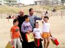
C'est... la demoiselle qui gagne ! Elle est un peu timide pour son premier succès et n'ose pas lever sa coupe ! Ca viendra...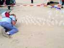
Les Jardins de Thérèse attirent constamment les amateurs d'art, qui veulent se montrer à la hauteur...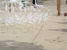
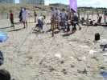
Elle avait aussi des suspensions de ronds transparents (je ne vous dis pas la provenance pour ne pas démythifier, mais le coca, c'est comme le cochon, tout est bon !)...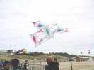
Ce cerf-volant de la famille des Frantzen était très bien tendu, et du coup, volait sans problème...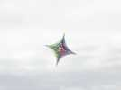
Cette sorte de flocon était simple, vu de face, mais beaucoup plus complexe de profil !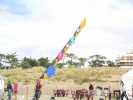
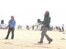
Grande première, Yves le Pirate reprenait les poignées lâchées depuis Berck suite à une rupture de clavicule et d'épaule à épisodes... Ca avait l'air d'aller, pour une reprise...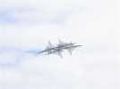
Ce joli cerf-volant épineux a bien aimé le vent fort de ce samedi !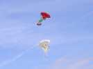
Ces deux CVs gonflables de base flow-form avec beaucoup d'ajouts sont en fait... des pilotables ! Ils ont évolué une bonne partie du temps au-dessus des tentes... voire posés dessus !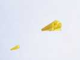
Magnifique sled à poches jaune, qui tractait d'enfer !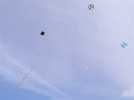
Le Triskel de Yannick a besoin d'une longue, très longue queue... Inconvénient : elle ne glisse pas, et dès qu'un autre CV la touche, l'animal se retourne et tire le gêneur vers le sol pour se venger ! Avisse !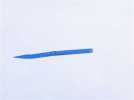
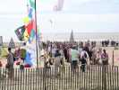
Le public était venu nombreux, malgré une météo défavorable le matin et un vent fort de 30 à 35 km/h !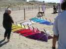
Des teams de pilotables, il y en avait, mais même des teams de papillons !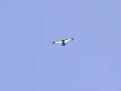
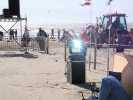
Mais on préparait déjà le vol de nuit, avec des projecteurs de poursuite que même le jour, ils éblouissaient !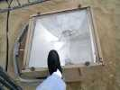
Les projecteurs généraux étaient aussi... généreux.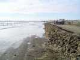
Mais les artificiers et les électriciens étaient un peu inquiets sur le niveau maximum de la marée, alors le Bull avait construit le plus grand château de sable du monde : 100 m de long !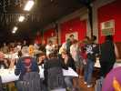
Le soir, comme d'hab, buffet à la Salle de l'Etoile. Pas d'apéro, mais avantage : pas de discours.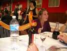
Les Espagnols avaient amené et distribué du Riojo, avec des cornes de taureaux pour montrer l'origine !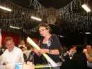
Et on nous a distribué plein de trucs pour être brillants au vol de nuit : milar coloré, étoiles à coller, clignoteur rouge et sticks luminescents !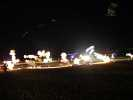
Ensuite, les terrains nous attendaient, dans une ambiance lumineuse de folie, avec déjà une décoration de ballons blancs.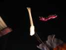
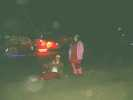
Le vol de nuit s'est bien passé, avec un vent fort qui méritait des positions défensives, mais on n'était pas trop serrés et ça s'est bien passé...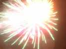
Ensuite un feu d'artifice comme j'en ai rarement vu, avec une base de départ de 100 m qui permettait tout un séquencement, une abondance, une chorégraphie des fusées, parallèles, convergentes, superposées, inoubliable en tout cas !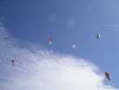
Le dimanche un grand ciel bleu dès la première heure, quelques petits nuages de beau temps pour décorer... avec plein de cerfs-volants, bien sûr ! Et toute la journée, un petit vent force 2 à 3 de la mer, idéal !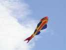
J'aime bien ce grand poisson qui n'est pas une queue gonflée, mais un vrai cerf-volant qui vole tout seul...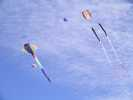
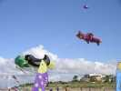
...et le reste de leur parc, le poisson vert, le pingouin, le nounours...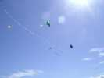
Aussi, devant le train, ces flocons plats relativement simples qui portent peut-être un nom particulier que j'ignore !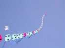
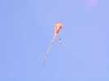
Variations sur le thème "Eddy", celui-ci très long, avec des restes du vol de nuit sur sa ligne...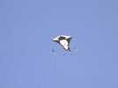
...et celui-là avec une queue de poisson et des pendeloques chinoises au bout des ailes...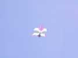
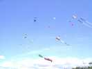
Avec un joli ciel et un vent idéal, pas mal de monde en l'air, mais on aurait pu en mettre encore plus, il y avait de la place libre...